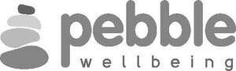

Trade Mark Journal No.2025/045 7 November 2025
UK00004275621 9 October 2025 (9,35,41,42,44,45)
Mark 1
Mark 2

- Class 9
- Computer software; computer programmes; computer applications; software applications for mobile devices; computer software to enable searching and retrieval of data; downloadable applications for mobile devices; downloadable videos; data, images, graphics, text, programs or information stored on electronic, magnetic and/or optical means; mobile apps; instructional and teaching apparatus and instruments; instructional, teaching and training materials in electronic form; downloadable media; downloadable electronic publications.
- Class 35
- Advertising; business management, organization and administration; office functions; human resources management; serving as a human resources department for others; employment services; recruitment services; personnel management and employment services; information, advisory and consultancy services in relation to the aforementioned services.
- Class 41
- Education; providing of training; sporting and cultural activities; provision of educational services relating to health, physical fitness, and mental wellbeing; provision of instruction relating to health, physical fitness, and mental wellbeing; conducting courses, seminars and workshops; organisation of webinars; providing educational information online from a database or via the Internet; provision of online electronic publications (non-downloadable); information, advisory and consultancy services in relation to the aforementioned services.
- Class 42
- Software as a service [Saas]; platform as a service [PaaS]; computer software maintenance services; development and design of mobile applications; providing temporary use of non-downloadable software applications accessible via a web site; provision of scientific information; electronic data storage; information, advisory and consultancy services in relation to the aforementioned services.
- Class 44
- Medical services; health advice and information services; providing information in the field of health via a website; preparation of reports relating to health; provision of exercise services and facilities for health rehabilitation purposes; health care; mental health services; health counselling; mental health screening services; health screening; home health care services; occupational health consultancy; personality assessment services [mental health services]; psychological care; psychological counselling; providing health care information by telephone; providing health care information via a global computer network; health care relating to relaxation therapy; health care relating to remedial exercise; music therapy for physical, psychological and cognitive purposes; advice in the field of childbirth; advice relating to allergies; advice relating to dentistry; advice relating to hair care; advice relating to immunology; advice relating to the medical needs of elderly people; advice relating to the personal welfare of elderly people [health]; advisory services relating to diet; advisory services relating to health; advisory services relating to medical problems; advisory services relating to medical services; advisory services relating to nutrition; advisory services relating to pharmaceuticals; advisory services relating to pharmacies; advisory services relating to slimming; advisory services relating to weight loss; occupational psychology services; occupational therapy and rehabilitation; occupational therapy services; information, advisory and consultancy services in relation to the aforementioned services.
- Class 45
- Online social networking services; online social networking services accessible by means of downloadable mobile applications; information, advisory and consultancy services in relation to the aforementioned services.
UK Independent Medical Services Limited
Representative: Wilson Gunn